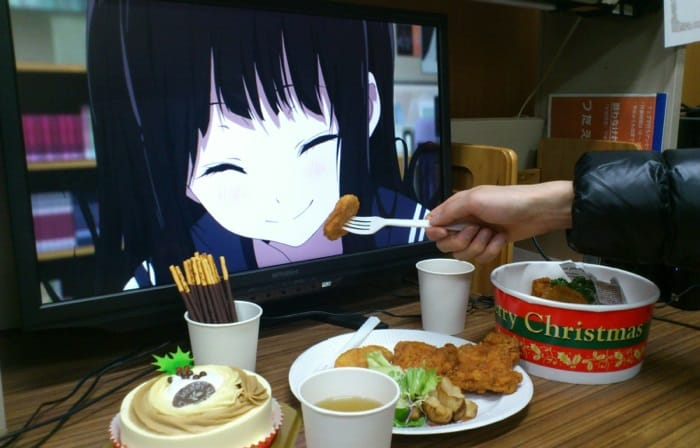

CONOCE SOBRE WAIFUS
LAS WAIFUS
Antes de todo hay que explicar qué es la 'waifu', como se conoce a estas novias virtuales: se trata de la romanización de la palabra inglesa 'wife' (esposa), y consiste en calificar a un cierto personaje de anime, manga o videojuego como tu esposa. Sería un personaje por el cual el fan en cuestión no solo siente una atracción física, sino que se trata de alguien con quien querría compartir su vida y casarse. Al parecer, el término proviene del manga 'Azumanga Daioh' y comenzó a utilizarse a partir de 2002. Es decir, no hablamos de una novia virtual propiamente dicha sino de un personaje de dibujos animados con el que algunos quieren compartir su vida. Los otakus (la comunidad amante de la cultura japonesa) compran pósters, almohadas, figuras y todo lo que tenga que ver con el personaje en cuestión. No solo eso, incluso existe el conocido como 'Yome To No Bansan' (algo así como 'cena con tu 'waifu''), una celebración donde los usuarios publican imágenes con sus almohadas comiendo o realizando otras actividades.
¿PERSONAS CON WAIFUS?
Las personas tienen Waifus por varias razones. Puede ser por el puro diseño del personaje, por sus cualidades que se parecen mucho a las suyas, por ser un reflejo de su propia personalidad o simplemente por la historia general del anime. Tener una Waifu hoy en día es algo que se da de forma casual, divertida y pasajera, dando a los otakus algo con lo que entretenerse. Aunque muchos estén en desacuerdo, el hecho es que tener una Waifu o fuertes sentimientos hacia un personaje ficticio es lo que realmente te hace parte de la cultura Otaku.
¿QUIERES UNA WAIFU?
Conseguir una Waifu puede ser un proceso complicado cuando intentas elegir una por ti mismo. Hay un montón de chicas en el anime a las que amar. Por eso hay varios generadores y buscadores de Waifu que te ayudarán a conseguirlo. Un buen ejemplo, y uno de los mejores buscadores que existen es nuestro buscador de Waifus. Para encontrar tu waifu ideal con nuestro buscador, tienes que aplicar los filtros según tus gustos y te mostrará waifus con las características que hayas elegido. Puedes filtrar waifus por su color de ojos, edad, raza, peinado, ocupación, pechos, personalidad, etc. Lo mejor de todo es que no tienes que limitarte a una sola waifu, ya que podrás añadir las waifus que quieras a tu lista de favoritas.